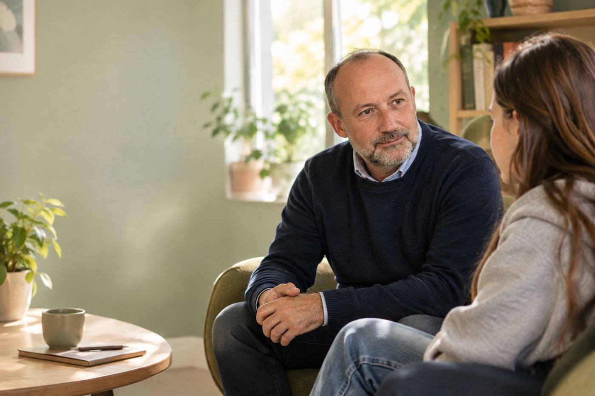

Accompagnements individuels : enfants, adolescents, parents, professionnels
Certaines situations deviennent difficiles à comprendre seul : une période de doute, une relation qui se tend, une question d’orientation, ou le sentiment de ne plus savoir comment avancer. Parler à une personne extérieure aide souvent à y voir plus clair.
J’accompagne les enfants, les adolescents, les parents, les familles et les professionnels de l’éducation, à partir de la situation qu’ils vivent.

Situations fréquemment rencontrées
Chaque situation est unique. Voici des questions qui reviennent souvent. Le carnet de terrain en prolonge la réflexion.
Pour les enfants et les adolescents
- Je manque de motivation à l'école.
- Je ne sais pas quelle orientation choisir.
- On me reproche sans arrêt mon comportement.
- Je n'arrive pas à décrocher des écrans.
- J'ai perdu confiance en moi.
Pour les parents
- Nous n'arrivons plus à dialoguer sereinement.
- Je ne sais plus comment poser un cadre.
- Je m'inquiète pour l'avenir de mon enfant.
- J'ai besoin de prendre du recul sur la situation.
Pour les familles
- À la maison, chaque discussion finit en dispute.
- Les frères et sœurs ne se supportent plus.
- On ne se parle plus vraiment.
- Nous voulons repartir sur de nouvelles bases, ensemble.
Pour les professionnels
- J'ai besoin d'une supervision régulière.
- Je dois gérer un conflit dans mon équipe ou avec une famille.
- Ma classe ou mon groupe devient difficile à tenir.
- Je veux mieux comprendre le public adolescent.
Pourquoi cette approche ?
Je ne donne pas de conseils prêts à l’emploi. Je prends le temps de comprendre le contexte de chaque personne, puis nous cherchons ensemble des pistes qui ont du sens pour elle. Voir ma manière d’accompagner.
Comment ça se passe
Le cadre est simple et annoncé dès le départ.
1. Premier échange
15 minutes, gratuites et sans engagement, par téléphone ou en visio. Vous exposez la situation, vous posez vos questions, et nous vérifions ensemble que la démarche vous convient.
2. Séances
Durée : 1 h (1 h 30 en famille).
Lieu : au cabinet, en visio ou, dans certains cas, à domicile (frais de déplacement selon la distance).
Rythme : défini ensemble, selon vos besoins. Les échanges partent de situations concrètes de votre quotidien.
3. Bilan
Nous faisons régulièrement le point sur ce qui évolue et sur ce qui reste à travailler, puis nous décidons ensemble de la suite.
Tarifs
Les tarifs sont affichés ici, avant tout contact. TVA non applicable, article 293 B du CGI. Déroulé, paiement et annulation : voir la FAQ.
Séance individuelle
Pour : les enfants et les adolescents
Durée : 1 h
60 €la séance de 1 h
Inclus : un écrit envoyé à la famille après chaque séance, avec les objectifs à venir. L’enfant ou l’adolescent en prend connaissance avant l’envoi.
Pour explorer une situation, prendre du recul ou avancer dans une réflexion.
Accompagnement parental
Pour : les parents, sans que l’enfant ait à venir
Durée : 1 h
60 €la séance de 1 h
Un espace de parole pour comprendre la relation avec votre enfant, retrouver des repères et décider des prochaines étapes.
Accompagnement professionnel individuel
Pour : les professionnels (animation, éducation spécialisée, enseignement, direction d’établissement)
Durée : 1 h
60 €la séance de 1 h
Un espace de réflexion individuel, à partir de situations concrètes rencontrées sur le terrain.
« Premiers repères »
Pour : un enfant, un adolescent ou des parents
Durée : 3 séances de 1 h et une synthèse finale
165 €au lieu de 180 €
Pour faire le point, retrouver des repères et décider ensemble de la suite.
« Parcours »
Pour : un enfant ou un adolescent
Durée : 8 séances sur 6 à 8 semaines, dont 1 séance familiale, un écrit après chaque séance et un bilan final
460 €payable en 2 ou 3 fois
Pour avancer dans la durée, avec des objectifs suivis d’une séance à l’autre.
« Cap / Orientation »
Pour : les adolescents, de la 3e à la terminale
Durée : lancement en famille (1 h 30), 5 séances, restitution en famille (1 h 30), suivi de 30 min un mois plus tard
590 €payable en 3 fois
Se connaître, comprendre ses moteurs, explorer, expérimenter, construire un cap : avec un document final « Mon cap ». Offre de lancement : 490 € pour les 5 premières familles, en échange d’un témoignage.
Séance famille
Pour : l’enfant ou l’adolescent et ses parents, ensemble
Durée : 1 h 30
85 €la séance de 1 h 30
Un temps à plusieurs pour mettre à plat la situation, entendre chacun et poser des objectifs communs.
Bon à savoir
- Cabinet ou visio : au cabinet, 22 rue Sainte-Marie, 79200 Le Tallud, ou en visio, au même tarif. Pour l’instant, le cabinet est partagé avec Lucie DAMIENS, praticienne en libération musculaire profonde et libération émotionnelle.
- À domicile : quand venir au cabinet est vraiment difficile. Déplacement à 0,60 € par kilomètre depuis Le Tallud (6 € à 10 km, 18 € à 30 km), dans un rayon de 30 km ; offert aux familles au tarif solidaire.
- Tarif solidaire : séance d’1 h à 40 € si le quotient familial CAF est inférieur à 700 €, sur justificatif, dans la limite de 2 créneaux par semaine.
- Avec un forfait : un créneau fixe chaque semaine, un échange téléphonique de 10 minutes entre deux séances si besoin, et la priorité en cas de crise. Paiement en 2 ou 3 fois pour le Parcours et Cap / Orientation.
- Annulation : une séance peut être reportée ou annulée jusqu’à 48 h avant ; au-delà, elle reste due.
- Limites : l’accompagnement ne remplace ni un suivi médical, ni un suivi psychologique, et n’établit aucun diagnostic. Aucun résultat n’est garanti : nous faisons régulièrement le point.
Les formations, réunions, conférences et accompagnements d’équipes ou d’établissements relèvent des accompagnements collectifs : sur devis.
Et si nous commencions simplement par échanger ?
Un premier échange permet de comprendre votre situation et de voir si cette démarche peut vous être utile.